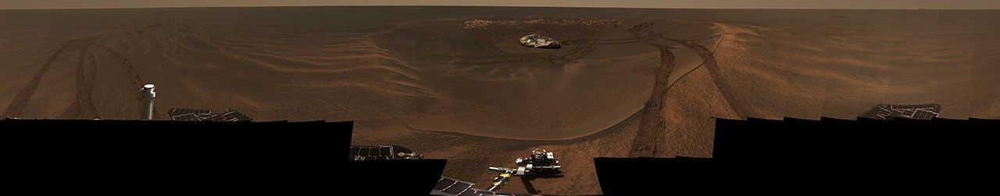
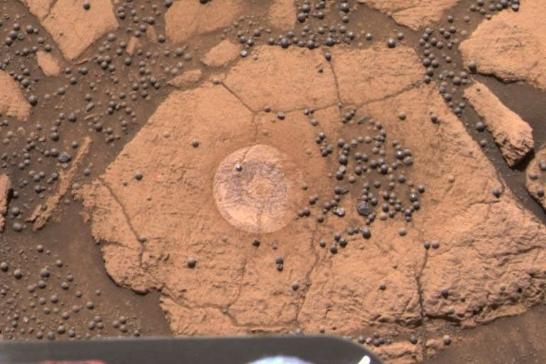
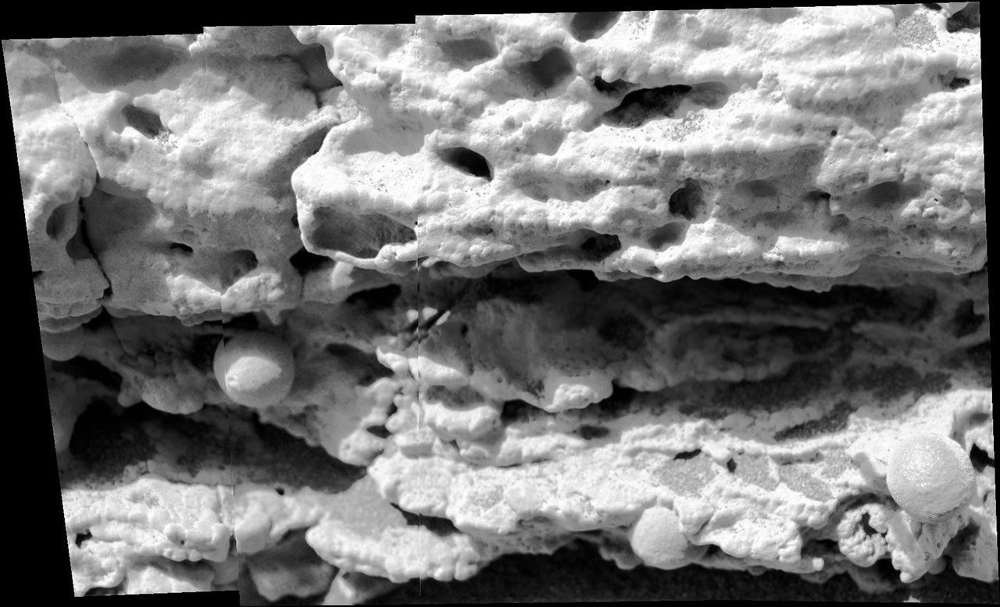
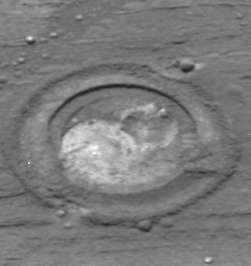
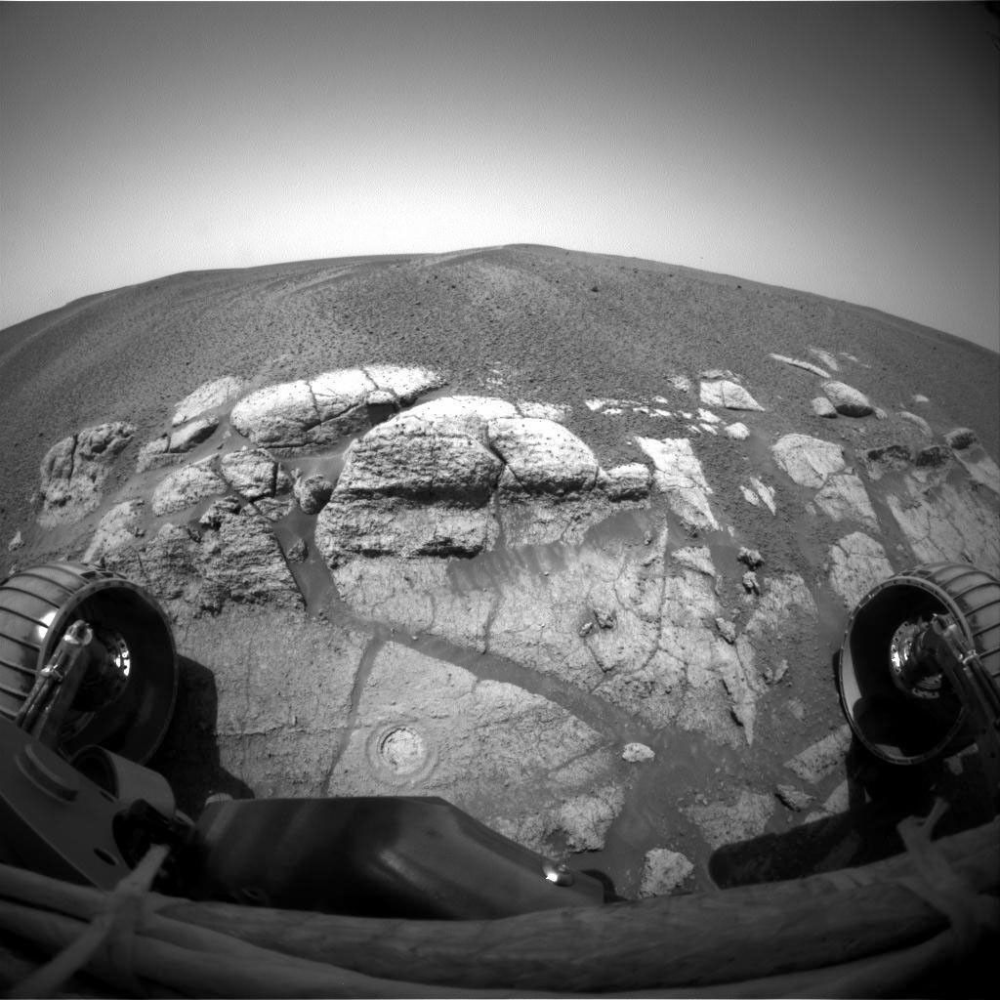
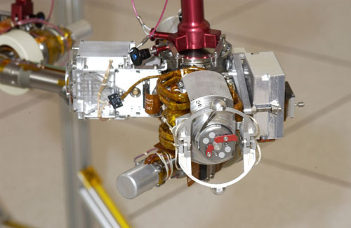

ECHOES OF MARS / MISSION 01 / SOURCE BOARD
Small grains.
A much older story.
Eagle Crater, early 2004. Production references for a compact historical reconstruction: quiet driving, a low layered outcrop, careful surface preparation and a separate cluster comparison. These are NASA reference images, not game screenshots or approved runtime assets.
45.5 mmMcKittrick abrasion diameter
4.4 mmMcKittrick cut depth
~4 mmReference berry diameter
Separate observationsGrinding and Berry Bowl analysis

Eagle Panorama
Low crater context and restrained palette. Black areas are missing mosaic coverage; do not reproduce them as terrain.
PIA05755 · Sols 58 and 60; published 2004-04-14
Approximate true color
Credit: NASA/JPL/Cornell
NASA source
Berry Bowl
Flat fractured rock, dark gray clusters and a brushed comparison patch. This target was not ground.
PIA05634 · Sol 48; published 2004-03-25
Approximate true color
Credit: NASA/JPL-Caltech/Cornell
NASA source
Last Chance
Thin interrupted layers, embedded grains and small voids. About 5 cm across; monochrome structure reference.
PIA18885 · Sol 39, 2004-03-03; published 2014-11-18
Monochrome microscopic image; not palette authority
Credit: NASA/JPL-Caltech/Cornell Univ./USGS
NASA source
Flatrock
Shallow abrasion and hard-grain obstruction. Separate observation from McKittrick and Berry Bowl.
PIA05521 · Sol 44; published 2004-03-09
Color interpretation not stated; use for geometry only
Credit: NASA/JPL/Cornell
NASA source
Mckittrick
Low exposed bedrock close to rover wheels. The working cut is 45.5 mm across and 4.4 mm deep.
PIA05459 · Grinding sol 30, 2004-02-23; image acquisition not separately asserted
Monochrome hazard-camera view; geometry/context only
Credit: NASA/JPL
NASA source
Rat Hardware
Metal housing, gold-toned insulation and white contact/support structure. Hardware reference, not an articulated runtime model.
NASA science instruments RAT photograph · Acquisition date not stated
Hardware photo; no Mars environment color inference
Credit: NASA/JPL-Caltech
NASA source